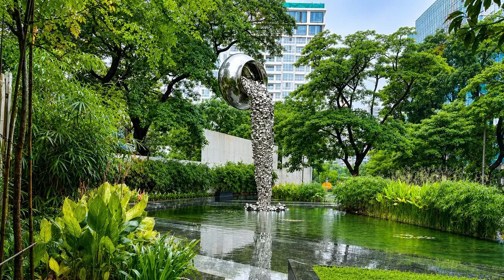
Godrej The Trees
Courtyards, stone-paved paths and planted gardens at Godrej Properties’ The Trees, including a beer garden with curved black granite seating and a reflecting pond.
View project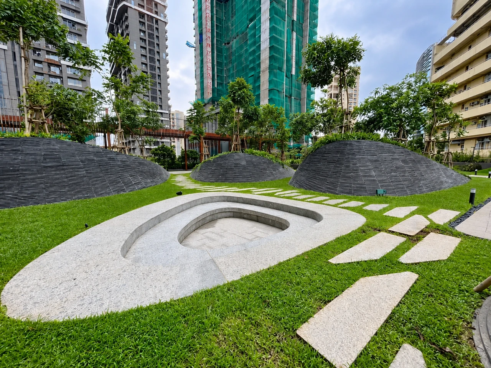
Lawns, plantation, trees, shrubs, soil preparation and garden development.
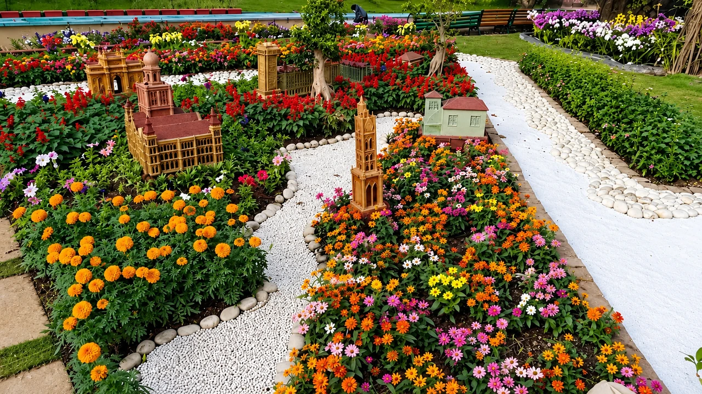
Softscape adds life, greenery and natural character to a developed space. 7 Petals provides plantation, lawn development, garden planting and softscape execution based on the requirements of the site.
We consider plant selection, location, soil conditions, irrigation and maintenance requirements so the result is a practical green space that stays attractive over time. Our plants are grown and sourced through our own nursery at Karjat.
Levels, soil quality and drainage are corrected before any planting begins.
Species are chosen for sunlight, soil, water availability and maintenance requirements.
Trees, shrubs, ground covers and lawns are planted to the agreed layout.
Watering, fertilisation and early care help the planting establish.
Landscape maintenance support keeps the garden healthy through the seasons.
Trees, lawns and plants improve air quality, reduce heat, absorb dust and support biodiversity. Planned alongside paving and pathways, they give a landscape both comfort and structure, and keep it manageable over time.
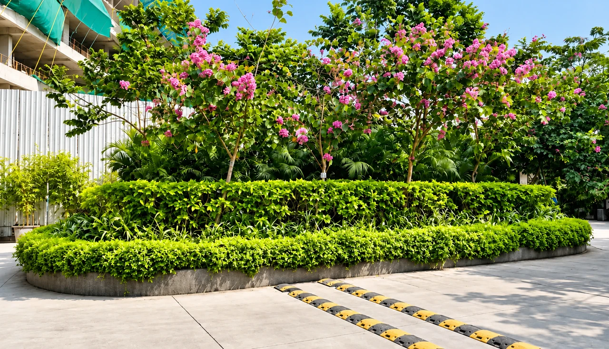
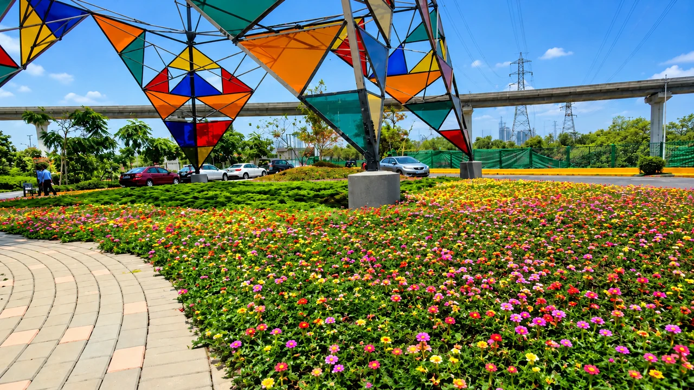
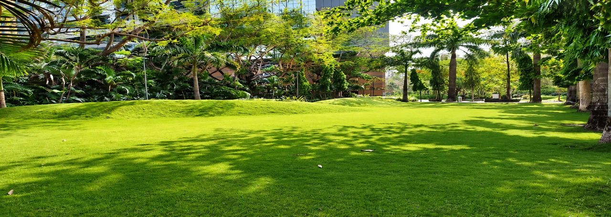
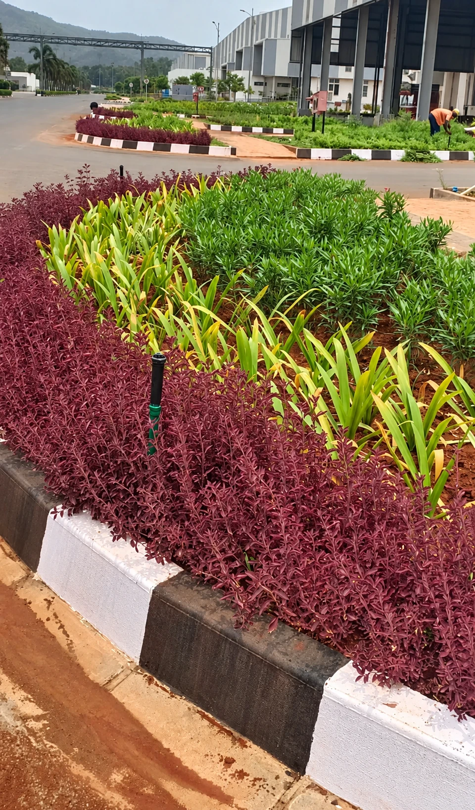
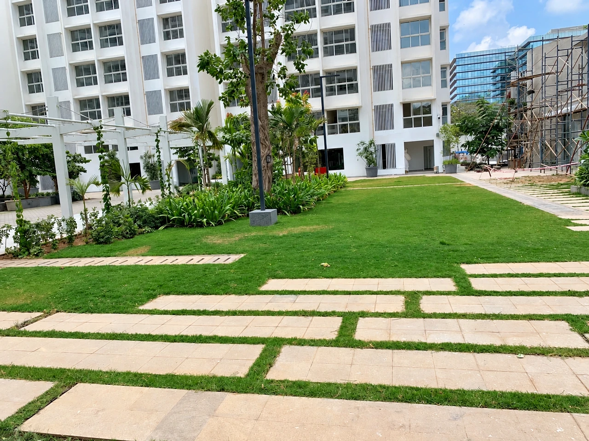
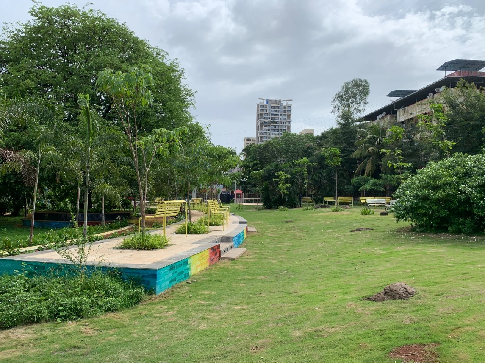

Courtyards, stone-paved paths and planted gardens at Godrej Properties’ The Trees, including a beer garden with curved black granite seating and a reflecting pond.
View projectLandscape development for Piramal Realty’s Vaikunth project covering hardscape, softscape, irrigation and maintenance.
View projectPlantation along internal roads and kerb-edged foliage beds at an industrial campus.
View project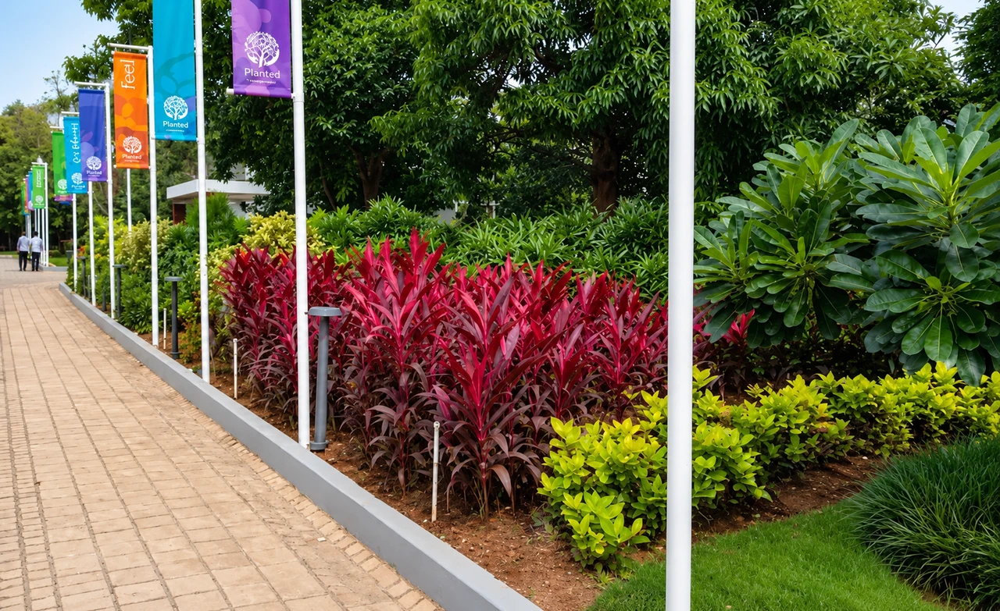
Regular upkeep of lawns, plants, gardens and landscaped areas.
Learn more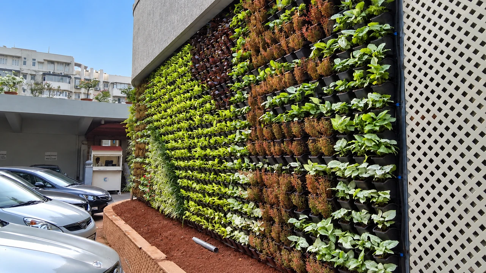
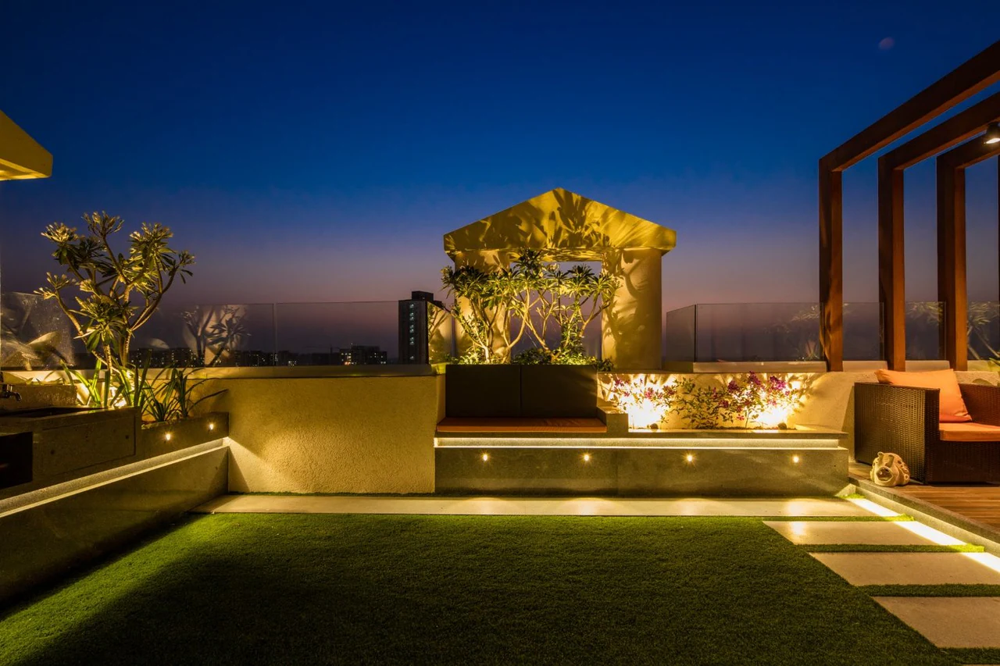